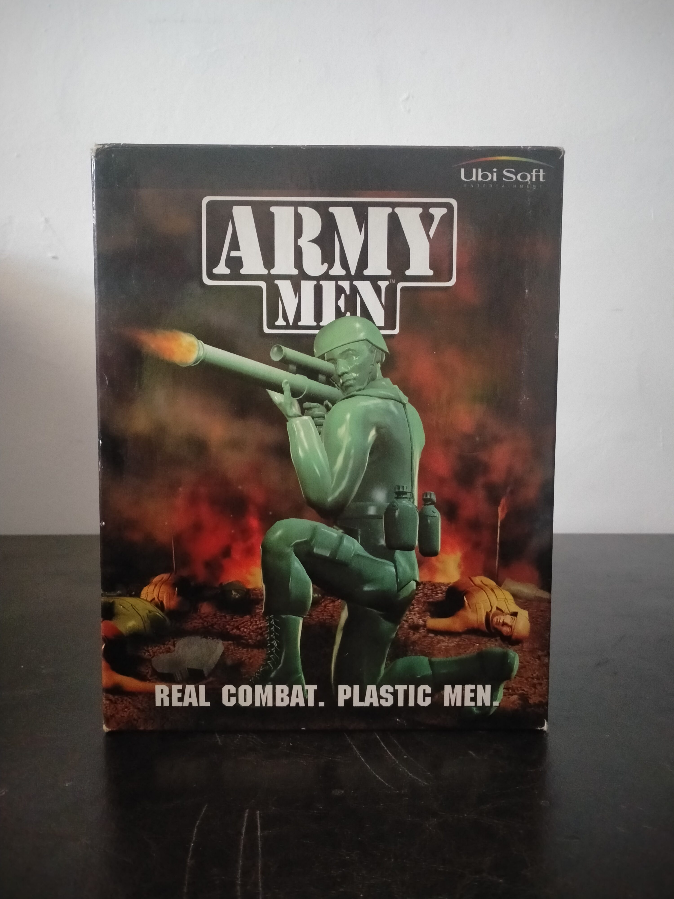

Ficha #000158
Army Men: Real Combat. Plastic Men
Army Men es la primera entrega de la saga de soldados de plástico creada por The 3DO Company, publicada para PC a finales de los años noventa. Su propuesta combina acción y táctica en tiempo real desde una perspectiva elevada, enfrentando al ejército Verde contra las fuerzas Tan en más de treinta misiones repartidas por distintos tipos de terreno. El jugador dirige diferentes clases de soldados, puede utilizar vehículos como tanques, jeeps, semiorugas y camiones, y dispone de apoyos como ataques aéreos, paracaidistas y reconocimiento. También incorpora multijugador para hasta cuatro participantes. Su estética basada en figuras militares de plástico y la representación visual de explosiones, vehículos y unidades como juguetes convirtieron el concepto en la base de una extensa franquicia de 3DO. Esta edición física europea en caja grande fue distribuida por Ubi Soft Entertainment Ltd. para PC CD-ROM.
- Formato
- Big Box
- Plataforma
- Win95 Win98
- Género
- Estrategia en tiempo real Táctica en tiempo real Acción Estrategia militar
- Serie
- Todos Big Box
- Desarrollador
- The 3DO Company
- Distribuidor
- The 3DO Company, Ubi Soft Entertainment Ltd.
- EAN
- —
Contenido de la edición
- Caja Big Box
- CD-ROM en caja Jewel Case
- Manual de instrucciones
- Tarjeta de registro de Ubi Soft
- Tarjeta de referencia de controles
Preservación
- Protección
- Sin protección
- Formato recomendado
- ISO
- Jugable en virtualización
- Sí
Edición en CD-ROM preservable mediante imagen ISO del disco original. La ejecución virtual es viable en una máquina virtual con Windows 95/98 o en sistemas posteriores con los ajustes de compatibilidad necesarios para software gráfico de finales de los años noventa.